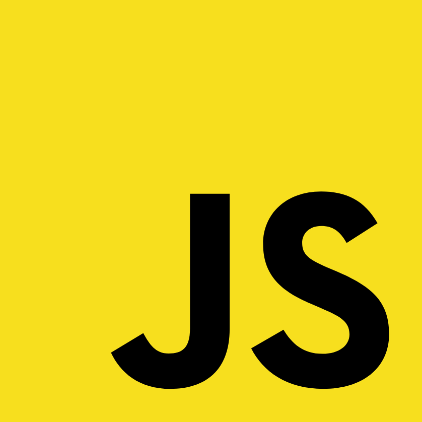

<!DOCTYPE html>
<html lang="en">
  <head>
    <meta charset="utf-8" />
    <meta name="viewport" content="width=device-width, initial-scale=1.0, maximum-scale=1.0, user-scalable=no" />

    <title>TC39 on the Latest in ECMAScript Standards</title>
    <link rel="shortcut icon" href="./../favicon.ico" />
    <link rel="stylesheet" href="./../dist/reveal.css" />
    <link rel="stylesheet" href="./../dist/theme/white.css" id="theme" />
    <link rel="stylesheet" href="./../css/highlight/github.css" />

    <style>
      .columns {
        display: grid;
        grid-template-columns: 1fr 1fr;
      }
    </style>


    <style>
        #footer {
            position: fixed;
            bottom: 10px;
            left: 10px;
            font-family: 'Iosevka Fixed', monospace;
            font-size: 0.8em;
        }
    </style>
  </head>
  <body>
    <div class="reveal">
      <div class="slides"><section ><section data-markdown><script type="text/template">

# TC39 on the Latest in ECMAScript Standards

## Shane F. Carr (@_sffc)
## July 2022, San Francisco
</script></section><section data-markdown><script type="text/template">
## TC39 Code of Conduct

https://tc39.es/code-of-conduct/

* Be **respectful**
* Be **friendly** and **patient**
* Be **inclusive**
* Be **considerate**
* Be careful in the **words that you choose**
* When we disagree, **try to understand why**
</script></section><section data-markdown><script type="text/template">
## COVID-19 Policy

* Please be **considerate** of each other's health tolerance and wear a face mask.

* In the reception space between Batgirl and Sue Storm, you may remove your mask briefly while eating/drinking.
</script></section><section data-markdown><script type="text/template">
Thanks to Dave Nugent and The SF JavaScript Meetup for partnering with TC39 for this event!
</script></section><section data-markdown><script type="text/template">
## Agenda

* What is TC39?
* Proposal Deep Dives
* TC39 Delegates Panel and Q&A
</script></section></section><section ><section data-markdown><script type="text/template">

</script></section><section data-markdown><script type="text/template">

</script></section><section data-markdown><script type="text/template">

</script></section><section data-markdown><script type="text/template">
## About TC39 🔍

* ECMA Technical Committee
* ECMAScript Language and Standard API
  * ECMA-262 (JavaScript)
  * ECMA-402 (Internationalization) 👋
  * ECMA-404 (JSON)
* Different sub-groups
  * TC39-TG2 (Internationalization) 👋
  * TC39-TG3 (Security)
  * Inclusion ad-hoc group
</script></section><section data-markdown><script type="text/template">

</script></section><section data-markdown><script type="text/template">
## Who? 👨‍🔧

* Delegates
  * Implementers
  * Large websites
  * Academics
  * OpenJS Foundation
* Invited Experts
  * Subject matter exports
  * Community representatives
* Contributors
* Community
</script></section></section><section ><section data-markdown><script type="text/template">
## How We Work

* No voting
* Consensus-based decision making
  * Diverse set of people in the committee
  * Work to satisfy everyone’s needs and goals
  * Objections and concerns
  * Backing rationales
* No stakeholder kept over another
* Don’t standardize things which aren’t ready
* 6 plenaries per year (including this week)
</script></section><section data-markdown><script type="text/template">
## Stage Process 🗃

https://tc39.es/process-document/

* Stage 0
  * Just an idea
* Stage 1
  * Describe shape of solution
  * Identify potential blockers
</script></section><section data-markdown><script type="text/template">
## Stage Process 🗃

* Stage 2
  * Describe precise syntactic and semantic details
* Stage 3
  * Further feedback from implementations and users
* Stage 4
  * Tested and ready for addition to the standard
</script></section><section data-markdown><script type="text/template">
## Example Proposals

* Stage 1: Decimal 🔢
	* Committee exploring problem space
* Stage 2: Records and Tuples 📂
	* Specification being finalized
* Stage 3: Temporal ⌚
	* Implementations in Progress
* Stage 4: Top-Level Await ⏳
	* Widely Available to Developers
</script></section></section><section ><section data-markdown><script type="text/template">
## Official communication channels 💬

* GitHub
* Matrix
* Discourse
* Incubator Calls
* Website
</script></section><section data-markdown><script type="text/template">

</script></section><section data-markdown><script type="text/template">

</script></section><section data-markdown><script type="text/template">
## TC39 Outreach Groups 📣

* TC39 Outreach to important focus groups
* Tools and Transpilers
* Frameworks
* Educators
  * Work on educational material
* Monthly calls
* Discuss ongoing TC39 proposals
</script></section><section data-markdown><script type="text/template">
## How do I get involved? 👩‍🏭

* Issue trackers of any relevant proposals
* Contribute to documentation on MDN
* Write polyfills for Stage 3 proposals
* Discourse to discuss new proposals
* File issues, create pull requests and write tests
* Your employer can become a member
* Join as an invited expert if you care about a specific topic
</script></section><section data-markdown><script type="text/template">

</script></section><section data-markdown><script type="text/template">

</script></section><section data-markdown><script type="text/template">

</script></section></section><section  data-markdown><script type="text/template">
# Proposal Deep Dives
</script></section></div>
      <div id="footer">
          @_sffc
      </div>
    </div>

    <script src="./../dist/reveal.js"></script>

    <script src="./../plugin/markdown/markdown.js"></script>
    <script src="./../plugin/highlight/highlight.js"></script>
    <script src="./../plugin/zoom/zoom.js"></script>
    <script src="./../plugin/notes/notes.js"></script>
    <script src="./../plugin/math/math.js"></script>
    <script>
      function extend() {
        var target = {};
        for (var i = 0; i < arguments.length; i++) {
          var source = arguments[i];
          for (var key in source) {
            if (source.hasOwnProperty(key)) {
              target[key] = source[key];
            }
          }
        }
        return target;
      }

      // default options to init reveal.js
      var defaultOptions = {
        controls: true,
        progress: true,
        history: true,
        center: true,
        transition: 'default', // none/fade/slide/convex/concave/zoom
        plugins: [
          RevealMarkdown,
          RevealHighlight,
          RevealZoom,
          RevealNotes,
          RevealMath
        ]
      };

      // options from URL query string
      var queryOptions = Reveal().getQueryHash() || {};

      var options = extend(defaultOptions, {"hash":true,"slideNumber":"c/t","height":800,"minScale":0.7,"transition":"slide","markdown":{"animateLists":true}}, queryOptions);
    </script>


    <script>
      Reveal.initialize(options);
    </script>
  </body>
</html>
